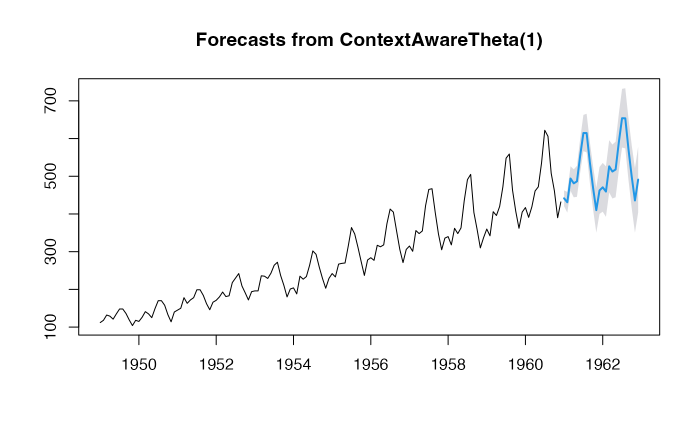

ctxthetaf.RdReturns forecasts and prediction intervals for a context-aware theta method forecast.
Time series (ts object or numeric vector)
Forecast horizon (default: 2*frequency for seasonal, 10 for non-seasonal)
Confidence level(s) for prediction intervals (default: 95)
Theta coefficient for drift weighting (default: 0.5, giving theta line = 2)
theta = 0: No drift (pure SES)
theta = 0.5: Classical Theta method (theta line = 2)
theta = 1: Full drift
theta > 1: Amplified drift
Model fitting function (default: lm)
Prediction function (default: predict)
Default is "gaussian", otherwise, uses sequential split conformal prediction as in Moudiki, T. (2025)
Number of simulations when type_pi is not
"gaussian"
Size of block when type_pi is
"block-bootstrap"
Reproducibility seed
Alias for nsim
Deprecated, use y instead
Additional arguments passed to fit_func
An object of class forecast
The classical theta method of Assimakopoulos and Nikolopoulos (2000) is equivalent to simple exponential smoothing with drift, using theta = 2. This implementation extends the method by:
Allowing flexible specification of theta parameter (default 0.5, which gives theta = 2)
Using machine learning models to capture non-linear drift patterns
Computing time-varying slopes via numerical differentiation
Hyndman, R.J., and Billah, B. (2003) Unmasking the Theta method. International J. Forecasting, 19, 287-290.
Moudiki, T. (2025). Conformal Predictive Simulations for Univariate Time Series. Proceedings of Machine Learning Research, 266, 1-2.
# Classical theta-like behavior (theta = 0.5)
fit1 <- ctxthetaf(AirPassengers)
plot(fit1)
# No drift (theta = 0)
fit2 <- ctxthetaf(AirPassengers, theta = 0)
plot(fit2)
# Amplified drift (theta = 1)
fit3 <- ctxthetaf(AirPassengers, theta = 1)
plot(fit3)

# With Random Forest
fit4 <- ctxthetaf(AirPassengers, fit_func = randomForest::randomForest)
plot(fit4)